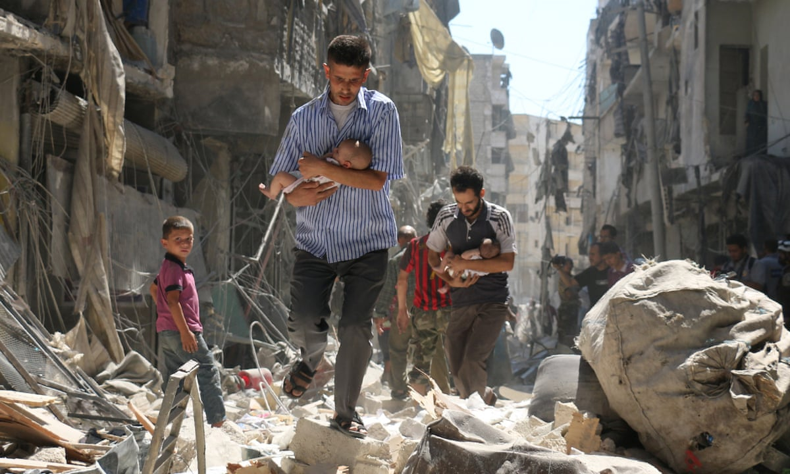

Hva
Vi er en organisasjon som bygger matdroner for å levere mat til mennesker i krigsherjede områder.

Hvordan
Ved hjelp av transportdroner får vi maten trygt fram til sivilbefolkningen i land som opplever krig og elendighet. Dronen styres av organisasjoner som har kunnskap av hvor befolkningen hører til, og brukes kun til veldedige formål.

Hvorfor
Menneskene i slike utsatte områder har lite mat tilgjengelig, og det kan være farlig å levere det på en trygg måte. Derfor lager vi matdroner slik at organisasjoner som jobber med slike situasjoner kan levere mat der det dem selv ikke kan dra trygt.